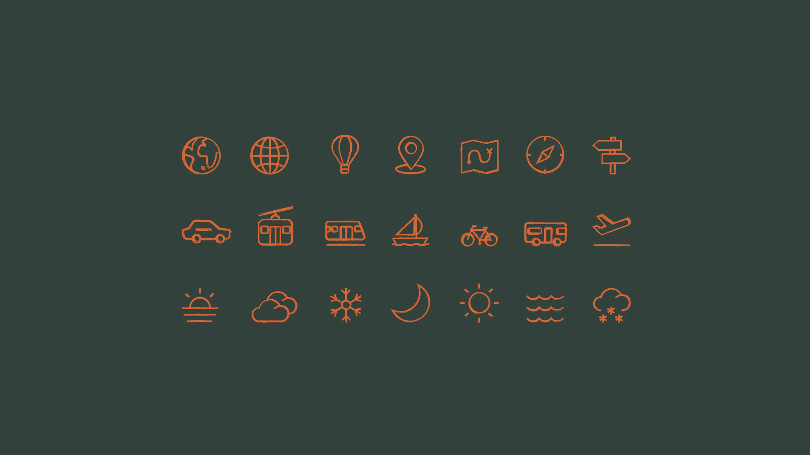

Diário de bordo Trabalhando juntas
Não, a gente não vai fazer exatamente o que você quer
E isso é ótimo. O papel da designer de marca não é seguir o seu gosto, é guiar a marca para um lugar melhor. Veja como isso funciona na prática.

Vamos começar com uma confissão: a gente não vai fazer exatamente o que você quer. Pelo menos, não exatamente.
Eu sei, eu sei. Você deve estar pensando: mas sou eu que estou pagando! A designer não deveria fazer o que eu peço? Hmmm, não é bem assim. Principalmente quando o assunto é design de marca.
A sua marca não é sobre o seu gosto
O seu negócio é como um filho. Você criou, cuida, e tem opiniões fortes sobre ele. Isso é super normal e, sinceramente, é lindo. Mas às vezes as suas preferências pessoais e o que é melhor para o negócio apontam para lados diferentes.
Você pode amar preto e branco minimalista, enquanto as suas clientes são famílias procurando acolhimento e diversão. Você pode estar cansada de uma cor que vê todo santo dia, enquanto o seu público está só começando a te reconhecer por ela.
Uma marca não é feita para agradar a dona. É feita para se conectar com as pessoas que você quer alcançar.
Então, pelo que você está pagando?
Não só por horas e arquivos. Você está pagando pela opinião e pela orientação de quem passa o dia inteiro pensando em como as marcas são percebidas. O nosso trabalho é pegar na sua mão, te ajudar a perceber as suas preferências e encontrar uma direção construída em estratégia, valores, personalidade e público. É aí que o design bom de verdade acontece.
Estratégia vence tendência. Estratégia vence gosto pessoal. Sempre.
Como é guiar na prática
Guiar não é ignorar você. É colocar a sua opinião no processo nos momentos certos, com as perguntas certas:
- Antes de desenhar, a gente pergunta sobre o seu público, os seus valores e aonde você quer chegar, e não só sobre as cores de que você gosta.
- Quando apresenta os conceitos, a gente explica o raciocínio por trás de cada um, para você julgar pelo que eles fazem, e não só pela primeira impressão.
- Quando você dá feedback, a gente te ajuda a separar “isso não funciona para as minhas clientes” de “isso não é o meu favorito”. Os dois são válidos. Só um deveria mudar o design.
(E se você odeia amarelo de verdade, a gente não usa amarelo. Relaxa! haha)

Por que soltar um pouquinho vale a pena
As clientes que mais aproveitam um projeto de marca são as que chegam curiosas, e não com a resposta final pronta na cabeça. Elas mandam referências como inspiração, não como ordem. Confiam no processo o suficiente para ver algo inesperado e perguntar por quê antes de dizer não.
É aí que a marca deixa de ser o reflexo do gosto de uma pessoa e vira algo maior: um universo visual que as suas clientes reconhecem, lembram e escolhem.
Antes de contratar uma designer de marca
Faça uma pergunta para você mesma. Eu quero alguém que execute a minha ideia, ou alguém que me ajude a encontrar a melhor ideia? As duas coisas existem, e as duas têm o seu lugar. Mas se você quer uma marca estratégica, coerente e verdadeiramente sua, procure uma guia.
A gente adoraria ser a sua.